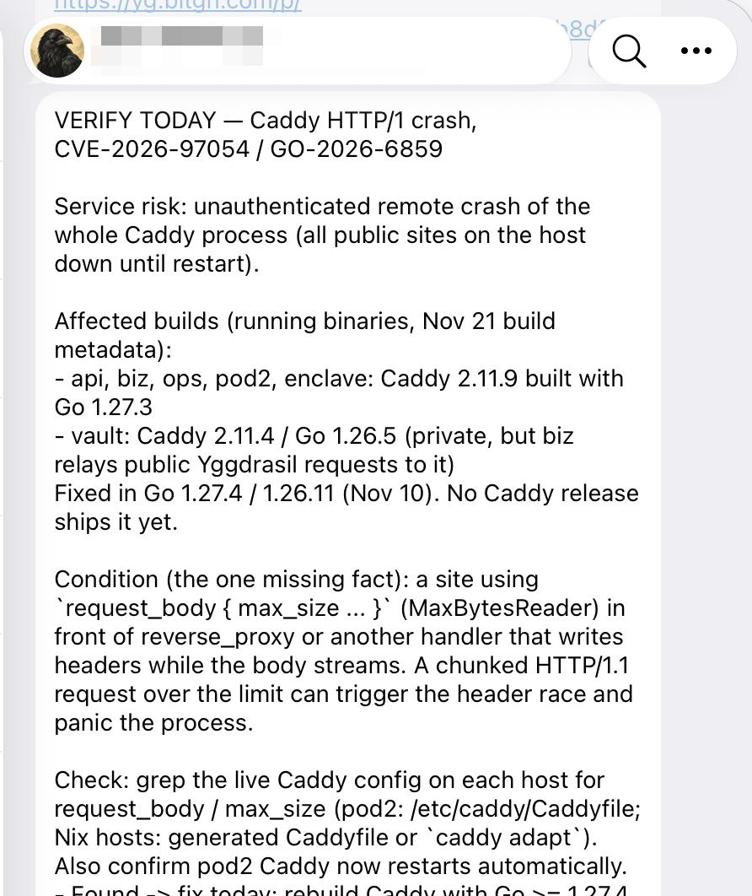
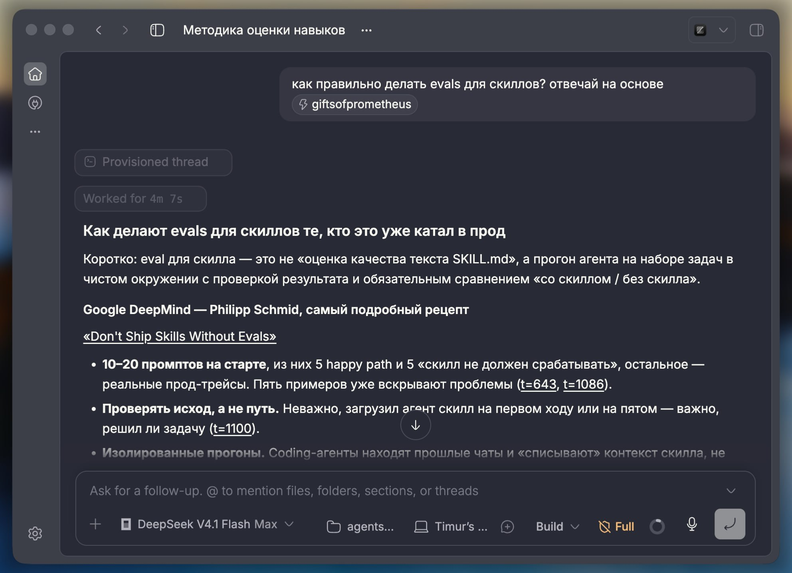

Практичные приёмы и сдвиги из AI- и agent-каналов Telegram для Go-backend инженера: что попробовать или поменять в работе на этой неделе.
🗓 окно 16–22 ноября 2026⚡ выводов: 8👀 на радаре: 3📡 сообщений прочитано: 70
💡 Что важно на этой неделе
Неделя прошла под знаком безопасности: в nginx нашли критические уязвимости через HTTP/2, и сразу несколько авторов поручили проверку своей инфраструктуры агентам. Главный приём из этих историй — дать агенту репозитории или реестр софта и попросить список рисков со ссылками на файлы, ничего не меняя без подтверждения, а работу агента-сторожа проверить откатом к состоянию до известного фикса. Вторая линия — дисциплина контекста: новая сессия на каждую фазу задачи и спеки-слайсы перед долгим прогоном агента. Много места заняли впечатления от новых моделей OpenAI и Google без проверяемых выводов и анонсы эфиров.
⚡
Главные практические выводы
Все 70 сообщений с текстом из 16 каналов просмотрены. 39 из них прочитаны целиком, 20 прошли попытку опровержения, 8 её выдержали и стали карточками, часть из них — с оговорками в блоке «Риск». Для каждой карточки проверены вложения поста: фото, альбомы и скриншоты.
01
Разводить план, реализацию и ревью по разным сессиям
Автор канала сформулировал правило: новая задача — новая сессия, даже в том же проекте. Менее очевидная часть: планирование, реализация и ревью одной фичи тоже стоит разделять, а ревью всегда запускать на чистом контексте.
Почему важно: при планировании агент перебирает противоречивые гипотезы, и этот мусор остаётся в контексте реализации. Отсюда, по словам автора, ошибки вида «ой, я перепутал». Ревью в той же сессии подталкивает модель к выводам, которые она уже сделала раньше.
⚡ Как применить
Возьмите следующую фичу Go-сервиса и сохраните план в файл, например docs/plan.md.
Сделайте /new и дайте агенту реализацию только по этому файлу. Если контекст нужно перенести, используйте встроенную команду handoff или скилл, как советует автор.
После реализации снова /new и попросите ревью diff без истории планирования.
Сравните с фичей, сделанной в одной сессии: сколько раз агент путал отброшенные варианты плана с принятыми и сколько замечаний нашло ревью.
Риск Порог «50% заполненности контекста» автор сам называет ничем не подтверждённым. Разделение по фазам тоже подано как опыт, без замеров.
В nginx нашли критические уязвимости через HTTP/2, исправления уже вышли. Автор поста дал готовый промпт, по которому агент обходит доступные репозитории, ищет конфиги nginx, Dockerfile и Docker Compose и оценивает риск.
Почему важно: часто nginx в backend-команде живёт не в коде сервиса, а в образах, compose-файлах и инструкциях по развёртыванию. Ручной поиск по всем репозиториям долгий, а промпт явно запрещает агенту что-либо менять без подтверждения.
⚡ Как применить
Дайте агенту доступ к репозиториям и отправьте промпт из поста: Найди конфигурации Nginx, Dockerfile, Docker Compose и инструкции по развёртыванию. Проверь версии, настройки HTTP/2 и HTTP/3 и другие условия эксплуатации опубликованных CVE.
Допишите последние строки промпта автора: Составь список проектов с оценкой риска и ссылками на конкретные файлы. Предложи план исправлений. Ничего не меняй без моего подтверждения.
Откройте каждый файл из списка и сверьте версию nginx с официальным advisory. Отдельно проверьте, не пропустил ли агент репозитории, где nginx приходит из базового образа.
Риск В посте нет номеров CVE и исправленных версий. Агент будет опираться на внешний сайт с описанием уязвимостей, поэтому итоговые версии сверяйте с первоисточником nginx.
Автор перенёс игру 2002 года с Windows на Go и Ebitengine почти за один прогон Codex. Перед стартом агент изучил исходный exe, затем через скиллы, включая Ship SDD Slice, составил 5 спек. После этого Codex работал 23 часа до выполнения всех спек.
Почему важно: скилл заставляет агента сначала писать спеку на каждую задачу, причём слайсом: функциональность целиком, без деления на фронтенд и бэкенд. Второй опорный приём — computer/browser use: агент сам запускал исходную версию и две новые и сравнивал их.
⚡ Как применить
Для следующей большой задачи попросите агента сначала составить спеки слайсами: каждая описывает сквозную функцию от API до хранения.
Дайте агенту способ запустить и эталон, и новую версию, например старый и новый бинарник сервиса на одном наборе запросов.
Запускайте реализацию с условием из поста: работать, пока все спеки не выполнены и не протестированы.
Посчитайте, сколько багов нашлось после прогона и сколько из них агент исправил по одному текстовому баг-репорту. У автора было 4 мелких бага и одно зависание из-за костыля оригинала, который агент сначала упустил.
Риск Скиллы Ship SDD Slice и Ponytail не опубликованы. Прогон съел около 120% недельного лимита подписки за $200, а расплывчатый запрос на мобильную версию пришлось целиком откатить.
Автор завёл двух агентов безопасности. Claude ищет новости об уязвимостях и сверяет их с реестром установленного софта. Codex с доступом к внутренним системам держит карту системы актуальной и перепроверяет выводы первого.
скриншот из поста

Скриншот из поста. Пример алерта агента, не калибровочный прогон из текста: «VERIFY TODAY — Caddy HTTP/1 crash»: затронутые хосты с версиями Caddy и Go, условие эксплуатации (request_body с max_size перед reverse_proxy) и что проверить в Caddyfile.
Почему важно: агент, который молчит, может молчать и потому, что сломан. Автор проверил это калибровкой: откатил карту систем до состояния перед фиксом CVE-2026-97032, и агент прислал алерт. Второй прогон на актуальной карте ничего не нашёл.
⚡ Как применить
Соберите реестр того, что реально крутится на ваших хостах: версии Go, прокси, базовых образов. На скриншоте агент брал их из метаданных сборки бинарников.
Попросите агента сверить реестр со свежими уязвимостями и прислать алерт с условием эксплуатации и командой проверки, как в отчёте про Caddy на скриншоте.
Подмените в реестре одну версию на заведомо уязвимую и повторите прогон.
Агент должен поднять тревогу на подменённой версии и промолчать на актуальной. Если он молчит в обоих случаях, ему не хватает данных о системе.
Риск Промпты, расписание и формат реестра автор не показал, всё работает в его собственной инфраструктуре BitGN. Повторять придётся со своим набором инструментов.
Автор канала свёл общие принципы из трёх гайдов: OpenAI «Securing persistent agents like OpenClaw at OpenAI», Anthropic «Building always-on agents» и «Operate Claude Managed Agents inside your security perimeter». По его словам, принципы у компаний схожи.
Почему важно: каждый принцип можно сверить со своей настройкой. Ключи лежат вне доступа агента и подменяются на настоящие при вызове сервиса, есть список разрешённых сервисов и сайтов, память хранится в файловой системе, за происходящим следит независимый агент, а полномочия и доступы разделены между агентами.
⚡ Как применить
Выпишите, какие ключи и токены видит ваш агент в окружении и файлах репозитория.
Для своего агента пройдите по пяти принципам из поста и отметьте, какие уже выполнены.
В своём проекте можно начать с первого пункта: убрать из окружения агента хотя бы один боевой ключ.
Повторите проход через неделю и посчитайте, сколько из пяти принципов выполнено.
Риск Ссылок на сами гайды и конфигураций в посте нет, гайды написаны про постоянно работающих агентов. Как реализовать подмену ключей, придётся смотреть в первоисточниках.
OpenAI выпустила GPT-6.2 Astra и Sol. По словам автора, кэш на Astra теперь живёт бесконечно, поэтому сессия, к которой вернулись после ночи или выходных, будет тратить меньше квоты.
Почему важно: автор называет дорогой кэш главным препятствием, из-за которого на подписке за $200 не получалось полностью работать на Astra. По логике автора, длинную сессию тогда выгоднее продолжать, чем начинать заново.
⚡ Как применить
Оставьте одну долгую сессию на Astra открытой на ночь и продолжите её утром.
Для сравнения начните утром новую сессию с той же задачей и тем же стартовым контекстом.
Сравните расход квоты в первом сообщении после перерыва в обоих вариантах.
Риск Замеров расхода в посте нет, а бессрочный кэш описан со слов автора. Распространяется ли он на агентные сессии и API, сверьте с анонсом OpenAI.
Автор канала показал агрегатор докладов по ИИ на русском с CLI и skill. Агент ищет доклады с мировых конференций, читает их транскрипты и через пару минут отвечает со ссылками на видео.
скриншот из поста

Скриншот из поста. Ответ агента на вопрос «как правильно делать evals для скиллов?»: пересказ доклада Philipp Schmid «Don't Ship Skills Without Evals» со ссылками на таймкоды t=643, t=1086, t=1100.
Почему важно: вопрос вроде «как в индустрии делают evals для агентов» обычно уходит в поиск по блогам. Здесь ответ собран из докладов, и у каждого пункта есть ссылка на доклад с таймкодом, так что первоисточник можно проверить.
⚡ Как применить
Просмотрите открытый репозиторий skill на GitHub и установите его командой со страницы проекта: npx skills add giftsofprometheus/giftsofprometheus-cli.
Задайте агенту вопрос по текущей задаче, например как делать evals для скиллов, как на скриншоте автора.
Откройте два-три таймкода из ответа и проверьте, что доклад говорит то же, что пересказал агент.
Риск Команда установки есть только на странице по ссылке из поста, для транскриптов нужен аккаунт. Это сторонний код в агенте, а полноту и точность ответов пост не подтверждает.
Автор канала пересказал доклад основателя Warp о «фабрике ПО». Путь задачи от тикета до ревью описывается правилами в репозитории. Система Warp насчитала 37 случаев, когда агенты начали реализацию, пропустив подходящие инструкции.
Почему важно: когда агент пропускает инструкцию, разработчик обычно напоминает о ней в чате, и никто не знает, сколько коллег сделали то же самое. Счёт таких случаев показывает, какое правило пора чинить для всех.
⚡ Как применить
Неделю записывайте в общий файл команды каждый случай, когда пришлось напомнить агенту правило из AGENTS.md.
Отберите промахи, которые несколько инженеров ловят на ревью. Автор называет их точкой старта.
Перепишите в AGENTS.md правило, о котором напоминали чаще всего, так, чтобы его нельзя было прочитать двояко. Это наш вывод из поста: автор говорит о поправке правил фабрики, без деталей для одной команды.
Сравните число напоминаний по исправленному правилу за неделю до правки и после.
Риск Ориентир Warp — команда примерно из десяти инженеров. Одному разработчику, по словам автора, может хватить агента, инструкций в репозитории и тестов в CI.
Тестируя Gemini Carbon, автор заметил, что обновление агентного файла сразу попадает в контекст и инвалидирует кэш; время жизни кэша он оценивает примерно в 15 минут. Замеров нет, и наблюдение сделано только на Gemini.
Перед открытием кода браузерной MMO ревью Codex нашло, как печатать себе золото через перенос кошелька; сервер и так сверяет забеги с телеметрией. Промпта ревью и коммита с фиксом в посте нет.
Выпуск про метрики DX: медиана до первого ревью 40 минут при доле AI-кода 20–40% и 82 минуты при доле от 80%, но сравниваются разные организации. Сам метод проверки строки AGENTS.md описан только в материалах выпуска.